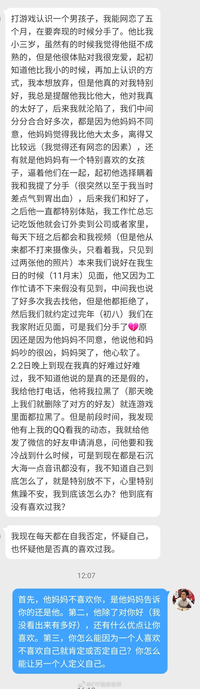
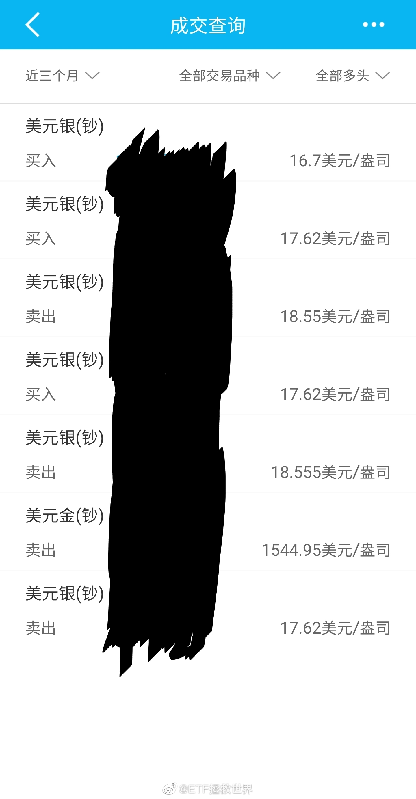

今日情感博主上线对你好永远不应该是喜欢一个人的唯一理由。因为他可能明天就不对你好了。如果运气差碰上不好的人，结束未必不是好事。因为结束你只浪费了几个月，不结束有可能痛苦一生。跟买了垃圾股一个意思。 
波动是我们的朋友 评论配图 //@ETF拯救世界:是这样的 评论配图 //@ETF拯救世界:回复@ETF拯救世界:又买回来。 评论配图 //@ETF拯救世界:一个半月，又出一格。@ETF拯救世界:最近三个月白银网格是这样的情况（顺序从下往上）等于筹码没丢，吃了两轮利润 
这四个字在牛市中非常有用。建议长期以来虽然不怎么亏钱但是也挣不到大钱的朋友好好想想//@ETF拯救世界: 新高不卖是什么意思呢。买入看估值，卖出看趋势。如果因为一个东西稍微贵点你就慌着卖出，可能很难挣大钱。一个品种新高的当天，别卖。跌有底，涨起来是很难预测天花板的。不容易把握，以后慢慢说@ETF拯救世界:新高不卖。
所以你现在知道牛市的疯狂是怎么来的了：涨——有了赚钱效应，金融机构发行更多产品——这些产品买入，涨更多——继续发行产品——继续买入，继续涨。涨到什么时候呢。涨到能入场的资金都入场了，卖出的人开始多于买入。开始跌就不会温柔。因为那些看着赚钱效应，申购产品等着赚钱的人，见到赚不了钱马上就会跑。问题在于，绝大部分金融机构发行产品不会管这个产品是不是能挣钱。他们优先考虑的是怎么把规模做大，趁着这股东风多发产品。由此，申购产品的人最终大多数亏损。然后他们就会认为“股市都是骗人的，挣不到钱”如果金融机构认为风险大，不发行产品。那么规模就会被别人超过，最后有可能就完了。死循环。很难解决。
还记不记得最低点的时候，有多少人写财务分析文章，告诉你有些品种完蛋了，没戏了，赶紧清仓吧。谁能想到从那时候起，一年多涨了50%+。投资有意思的地方在于，很多人认为学一点财务知识就能做好投资。如果学点财务知识，会看点报表，会算个ROE就能做好投资，那么大多数会计都应该是好的投资者了。然而，事实是这样吗？学点财务知识当然对投资有用，但这不是决定性的。只会看财报就开始判断未来走势，只能说，与成为一个合格的投资者还隔着8条街。
最近评论里有一些朋友开始议论别的基金投资人，这样不好，以后不要了。从球球开始，我就发现一个颇为奇怪的现象：很多玩基金的人特别喜欢互相踩。说实话，给我感觉很不好。当然，感觉不好可能也与我经常是受害者有关。有些人给人感觉是小肚鸡肠，看到别人好就难受。有些人是拼命蹭热度，谁关注度高就骂谁，盼着自己粉丝多一点能多挣点钱。我倒觉得，要做事先做人。有组团攻击其他人的功夫，不如踏踏实实做好自己的事。当然，不是每个人都这么想。我亲见有大V说过，多卖组合挣钱才是最重要，人品顾不上。我不会评论任何其他人。这不是好好先生，是我没那个资格。我只想做好自己的事。我也希望大家不要在我的评论里说这个那个不好。不是我怕惹麻烦，而是我认为即使你有资格，也不要随便议论别人，这不是一个好习惯。你跟投了谁，觉得好就继续，觉得不好就停止。其实好不好这种事情真的很难说。与持仓风格，跟投开始时点等等都有关系，不能简单一概而论。当然，我也在观察，看看哪些人值得信任。无论是水平还是人品。毕竟第三轮走了一大半，如果没有下一轮，我也会推荐靠谱的朋友给大家。另外说一句题外话。其实大家生活中难免都会有羡慕嫉妒恨的时候。意识到自己有这种情绪，不如换个角度思考：他为什么会成功？有哪些值得我学习的特质？这样，总比搞一些下三路小动作使阴招把他拉下来要好得多。